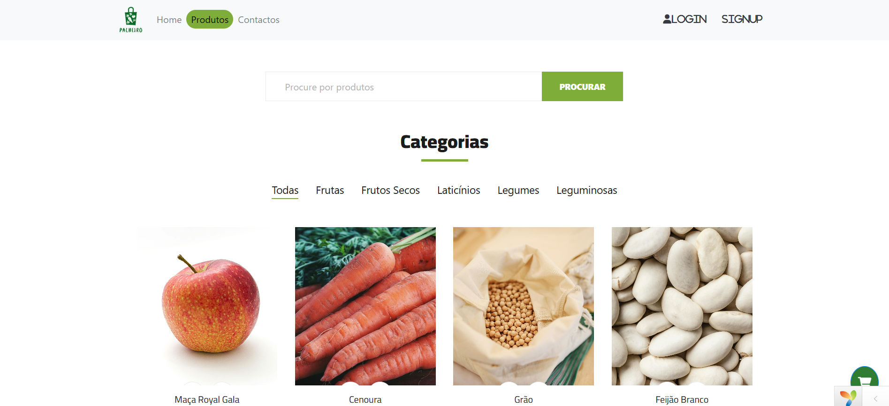
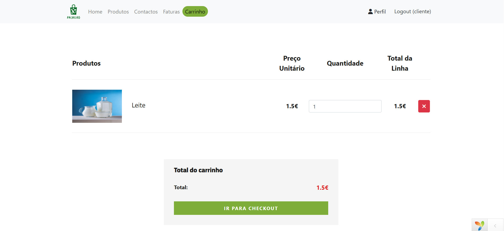
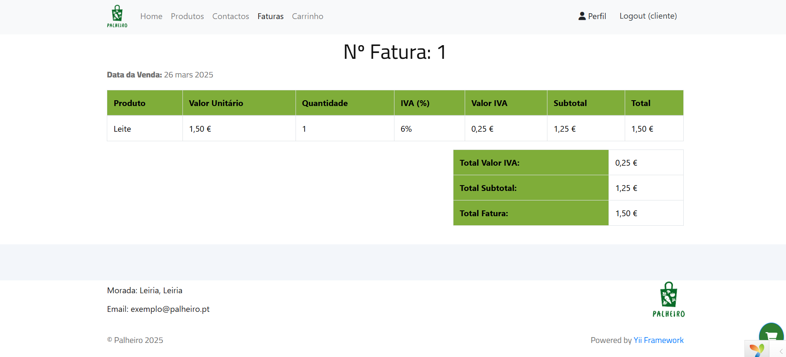

Sobre o "Paheiro"
O presente trabalho foi desenvolvido no âmbito das unidades curriculares de Plataformas de Sistemas de Informação, Acesso Móvel a Sistemas de Informação e Serviços, e Interoperabilidade de Sistemas, com o objetivo principal de conceber e implementar uma solução tecnológica composta por uma aplicação web e uma aplicação móvel. Estas aplicações foram integradas com uma API, tendo como finalidade suportar a operação de uma mercearia hipotética, denominada "O Palheiro". A evolução do mundo para uma era digital, exigiu que a área do retalho também acompanhasse essa transformação, o que levou naturalmente à criação de websites de comércio eletrónico, de fácil utilização para satisfazer as necessidades em constante mudança dos clientes. O projeto visa desenvolver e implementar um sistema de uma mercearia online com uma aplicação web de front office, um portal administrativo de back office, uma aplicação móvel e uma API RESTful para fornecer uma interoperabilidade ideal entre os vários componentes. A plataforma tem como objetivo agilizar o processo de compras e oferecer aos interessados um conjunto sólido de ferramentas para gestão da mercearia, interação com o utilizador e monitorização de desempenho.
  